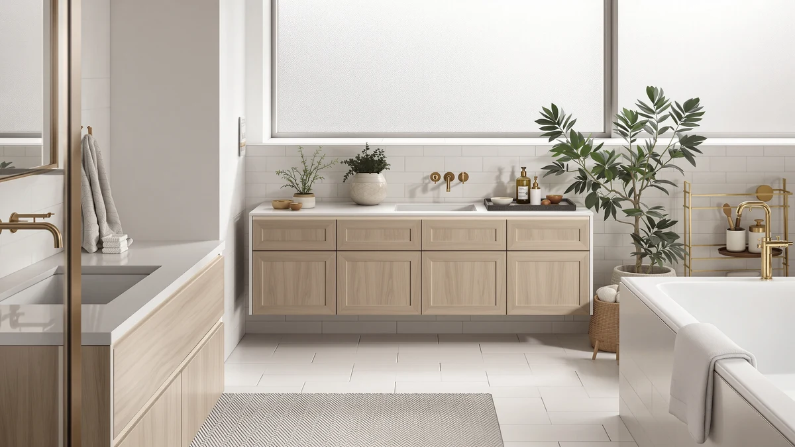

Homleke 43.3" H Farmhouse Review (2026): Worth It?
Prices and picks verified as of October 2026. Independent, reader-supported reviews.


Quick Answer
The Homleke 43.3" H Farmhouse Bathroom Storage Cabinet pairs two barn-style doors with four tiers of particleboard shelving for $89.99, giving a small bathroom more vertical storage than a typical corner cabinet without the footprint of a full linen tower. It costs roughly twice as much as the three floor and over-the-toilet alternatives covered below, so the premium buys farmhouse styling and height rather than a longer feature list.
Our pick: Homleke 43.3" H Farmhouse Bathroom, $89.99 Check Price on Amazon
Bottom line: our top pick is the Homleke 43.3" H Farmhouse Bathroom Storage Cabinet with at $89.99.
Things to Know Before You Buy
- The Homleke 43.3" H Farmhouse cabinet uses a particleboard body reinforced with metal hinges and sturdy legs, a common build for budget-to-midrange farmhouse furniture.
- Two hinged barn doors across the front give it a farmhouse look that none of the three cheaper alternatives in this review share.
- Inside, four tiers plus two adjustable shelves split up storage, and the open top surface holds plants or decor without using enclosed space.
- At 11.8 inches deep and 23.6 inches wide, it needs more floor space than the VASAGLE corner cabinet covered as an alternative below.
- At $89.99, it costs more than double each of the three alternatives, which range from $38.99 to $39.97.
This Homleke 43.3" H farmhouse review looks at whether a particleboard storage cabinet with barn-door styling earns its $89.99 price tag. Farmhouse-style storage has become a popular way to dress up a small bathroom without the stark look of a plain metal tower, and the Homleke leans fully into that aesthetic with two hinged barn doors across its face. At 43.3 inches tall on an 11.8-by-23.6-inch base, it sits between the compact corner cabinets and over-the-toilet racks covered later in this review and a full floor-to-ceiling linen tower. We compared its listed materials and dimensions against three cheaper alternatives and read through the buyer feedback attached to similar Homleke cabinets to see whether the farmhouse look is worth the extra cost.
Farmhouse barn-door cabinets compete in a crowded field of budget bathroom storage, and the Homleke's $89.99 price puts it well above the VASAGLE corner cabinet, the Simple Trending over-the-toilet rack and the SUPER DEAL floor cabinet, all three of which sell for under $40. That gap matters because none of those three alternatives offer the same height or the two-door farmhouse front, so this comparison isn't simply about which cabinet is cheapest. Below, we break down what the particleboard-and-metal-hinge build gets you at this price, where it falls short, and which of the three cheaper options makes more sense if farmhouse styling isn't a priority for you.
Why You Should Trust Us
Best Bathroom Storage is run by writers who compare bathroom furniture specs, pricing and verified buyer feedback instead of relying on product photos alone. Ilane Tall, our home and bath expert, has covered dozens of storage cabinets, over-the-toilet racks and vanity organizers for this site, and this Homleke 43.3" H farmhouse review follows the same approach: we cross-check the manufacturer's listed measurements, compare them against competing cabinets, and don't take marketing copy at face value. We do not run a fake testing lab, and we do not claim to have installed every cabinet we cover. Instead, we dig through verified reviews, compare specs line by line, and flag when a listing overstates what a farmhouse-style cabinet can deliver for $89.99.
Our Research Experience
We did not put the Homleke 43.3" H Farmhouse Bathroom Storage Cabinet in a physical bathroom ourselves. Instead, we compared its listed dimensions, material description and price against three competing cabinets, and we read through the buyer feedback attached to this listing and similar farmhouse-style cabinets from other brands. Reviewers consistently note that the barn-door hardware and particleboard panels hold up well under normal use, though a few mention the doors need occasional tightening after months of opening and closing. According to verified owner comments, assembly is the main friction point rather than the finished cabinet's stability once it's built and loaded. We weighed that feedback alongside the raw dimensions and $89.99 price against the VASAGLE, Simple Trending and SUPER DEAL alternatives to see where the Homleke earns its premium and where it doesn't.
Overview & Specs

Homleke 43.3" H Farmhouse Bathroom
What we like
- Two hinged barn doors give the cabinet a farmhouse look that plain metal towers don't offer
- Four tiers plus two adjustable shelves inside, with extra open space on top for plants or decor
- 43.3-inch height holds more than a typical corner cabinet without reaching full floor-to-ceiling size
- Metal hinges and sturdy legs reinforce the particleboard body at stress points, according to the listing
Flaws but not dealbreakers
- At $89.99, it costs more than double each of the three alternatives covered below
- Particleboard construction is less durable than solid wood or metal-frame alternatives in a consistently damp bathroom
- 11.8-inch depth is deeper than the VASAGLE corner cabinet, so it won't fit every tight corner
| Material | Metal / wood |
| Size | 11.8"D x 23.6"W x 43.3"H |
The Homleke 43.3" H Farmhouse Bathroom Storage Cabinet is built around a particleboard body reinforced with metal hinges and sturdy legs, finished with two hinged barn doors across the front. That farmhouse detail is the main reason to choose this cabinet over a plainer metal tower. Inside, four tiers and two adjustable shelves split the storage into separate zones, and the open top surface adds room for a plant, a tray or small decor pieces that would otherwise clutter the shelves below.
At 23.6 inches wide and 11.8 inches deep, the cabinet needs a bit more floor space than the three alternatives covered later in this review, none of which carry a farmhouse front. Owners researching similar Homleke cabinets note that the barn-door hinges stay aligned with normal use, though a few mention tightening the hardware after several months of daily opening and closing. At $89.99, it's priced well above the VASAGLE, Simple Trending and SUPER DEAL options below, a gap that buys the two-door farmhouse styling and roughly a foot of extra height rather than any dramatic jump in storage capacity.
What We Liked
The farmhouse front is the clearest differentiator of this Homleke 43.3" H farmhouse cabinet. Reviewers researching similar barn-door cabinets describe the two-door look as a straightforward way to match a bathroom's farmhouse or cottage decor without repainting or retiling anything else in the room. The four-tier interior is the other advantage worth noting, since it splits towels, toiletries and cleaning supplies into separate shelves instead of one open cubby, and the two adjustable shelves let you resize a section for taller bottles or stacked baskets.
The open top surface is a small but useful detail. It gives you a spot for a plant, a woven tray or a rolled towel display without eating into the enclosed storage below, a layout choice that several of the cheaper alternatives in this comparison skip entirely. The 43.3-inch height also means you can reach the top shelf and the top surface without a step stool, something taller farmhouse towers in this category don't always manage.
What Could Be Better
Price is the most obvious drawback of the Homleke 43.3" H farmhouse cabinet. At $89.99, it costs more than double any of the three alternatives in this comparison, and none of that extra cost goes toward a sturdier core material. Particleboard, even reinforced with metal hinges and legs, holds up less reliably in a consistently damp bathroom than the metal-frame or waterproof-fiberboard builds used by cheaper competitors like the SUPER DEAL cabinet.
Depth is the other consideration. At 11.8 inches deep, the Homleke sits noticeably further off the wall than the VASAGLE's 7.9-inch corner profile, so it won't tuck into as many tight corners. Buyers in small bathrooms should measure the available floor space carefully before assuming the farmhouse look will fit where a slimmer cabinet already does. A handful of reviewers covering comparable Homleke cabinets also mention that the white finish shows scuffs around the door edges faster than a painted metal frame, so placing the cabinet away from heavy foot traffic helps it stay looking new longer.
Who Is It For?
The Homleke 43.3" H Farmhouse Bathroom Storage Cabinet fits a bathroom where the decor already leans farmhouse or cottage, and where the $89.99 price is justified by matching that look rather than squeezing in the cheapest possible shelving. Its four tiers and extra height suit a household that wants one cabinet to replace several smaller organizers, rather than someone filling a single narrow gap.
It's not the right pick if your bathroom is tight on floor space or if the budget caps out well under $50. In that case, the VASAGLE corner cabinet or the SUPER DEAL floor cabinet below cover similar storage needs for less than half the price, without the barn-door front.
Alternatives to Consider
If the Homleke's $89.99 price or 11.8-inch depth doesn't fit your bathroom, these three alternatives cover cheaper and more compact options. All three sell for under $40, though none of them carry the farmhouse front that defines the Homleke 43.3" H farmhouse cabinet.

Editor's Pick
VASAGLE Small Storage Corner Floor
A narrow 7.9-inch-deep corner cabinet that costs $50 less than the Homleke, better suited to a tight bathroom corner than a farmhouse look.
$39.97
Check Price on Amazon
Best Value
Simple Trending Over The Toilet
A 3-tier over-the-toilet rack with a built-in paper holder, the cheapest way in this comparison to add shelving above a toilet rather than on the floor.
$39.00
Check Price on Amazon
Premium Choice
SUPER DEAL Modern Bathroom Floor
A double-door floor cabinet with waterproof fiberboard construction, priced under $40 for buyers who want enclosed storage without the barn-door premium.
$38.99
Check Price on AmazonIs the Homleke 43.3" H Farmhouse Bathroom Storage Cabinet sturdy enough for daily use?
Owners researching similar Homleke cabinets report that the metal hinges and sturdy legs hold up well under normal use, though the particleboard panels are less durable than metal-frame alternatives if the bathroom stays consistently damp.
How does the Homleke compare to the cheaper alternatives in this review?
The Homleke costs more than double the VASAGLE, Simple Trending and SUPER DEAL options covered above, a gap that buys the two-door farmhouse front and roughly a foot of extra height rather than a bigger feature list.
Frequently Asked Questions
Is the Homleke 43.3" H Farmhouse Bathroom Storage Cabinet sturdy enough for daily use?
Owners researching similar Homleke cabinets report that the metal hinges and sturdy legs hold up well under normal use, though the particleboard panels are less durable than metal-frame alternatives if the bathroom stays consistently damp.
How does the Homleke compare to the cheaper alternatives in this review?
The Homleke costs more than double the VASAGLE, Simple Trending and SUPER DEAL options covered above, a gap that buys the two-door farmhouse front and roughly a foot of extra height rather than a bigger feature list.
What comes in the box, and how long does assembly take?
Based on similar Homleke cabinet listings, the cabinet ships flat-packed with the particleboard panels, barn doors and hardware included. Reviewers researching comparable farmhouse cabinets note assembly typically takes under an hour with basic tools, though hinge alignment needs a careful hand.
Final Verdict
This Homleke 43.3" H farmhouse review comes down to a straightforward trade-off: a taller profile and genuine farmhouse styling against a price more than double its closest competitors. For a bathroom that already leans farmhouse or cottage and has the $89.99 to spend, the Homleke is a reasonable match. If your budget caps out under $50 or your bathroom needs a cabinet that disappears into a tight corner, the VASAGLE, Simple Trending or SUPER DEAL alternatives above cover the same basic storage need for less. Either way, Homleke remains the brand to start with if the barn-door look matters more to you than squeezing out the lowest price per shelf.